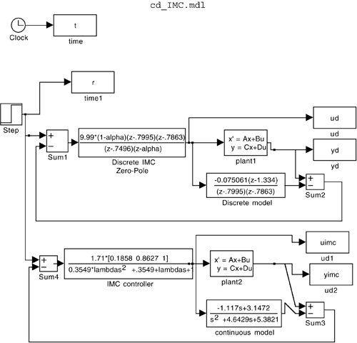

Appendix M16.2: SIMULINK .m and .mdl Files for Example M16.3
Use the following m-file to run simulations based on the cd_IMC.mdl SIMULINK model, and make plots. See Figure M16-5.
% Run continuous and discrete IMC simulations
% For use with the simulink diagram: cd_IMC.mdl
%
% B.W. Bequette
% 14 Sept 00
%
% plant values are (notice the other models are embedded in the
% simulink diagram
a = [-2.4048 0;0.8333 -2.2381];
b = [7; -1.117];
c = [0 1];
d = 0;
%
% first enter the value of lambda desired in the command window
%
alpha = exp(-0.1/lambda);
%
tfinal = 5; % final simulation time
sim('cd_IMC')
%
figure(3)
title('comparison of discrete and continuous IMC')
subplot(2,1,1),plot(t,yimc,'--',t,yd,t,r,'-.')
legend('continuous','discrete')
xlabel('time, min')
ylabel('y')
subplot(2,1,2),plot(t,uimc,'--',t,ud)
legend('continuous','discrete')
ylabel('u')
xlabel('time, min')

|